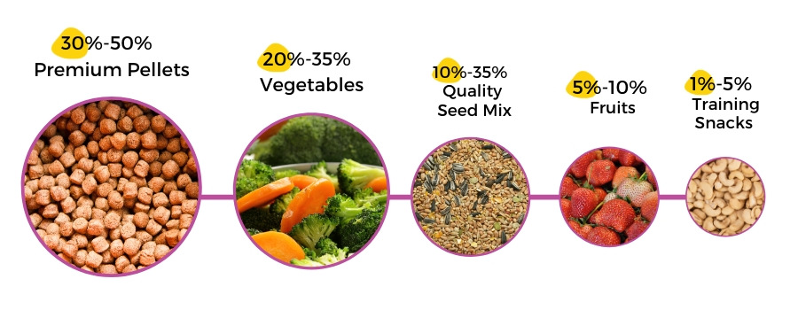

Housing & cage requirements
Cockatiels are active birds who like to move and fly around, so a larger cage is reccomended.
Likewise, owners can also free fly the birds at safe areas around the house.
There should be enough toys and perches as well.
A removable bottom tray is recommended to make it easier to clean the cage
(cockatiels tend to soil their cages quite a lot).
A nest box should be provided during the mating season if you are keeping a breeding pair.
Grooming and caring
- Clean the cage at least once a week.
- Replace the water and food dishes in the cage every day
- Disinfect the entire cage and the surroundings at least twice a year.
- Provide your cockatiel with a bathing area
Diet
Cockatiels eat a varied diet of seeds, pellets, boiled eggs, leafy vegetables and fruit.
